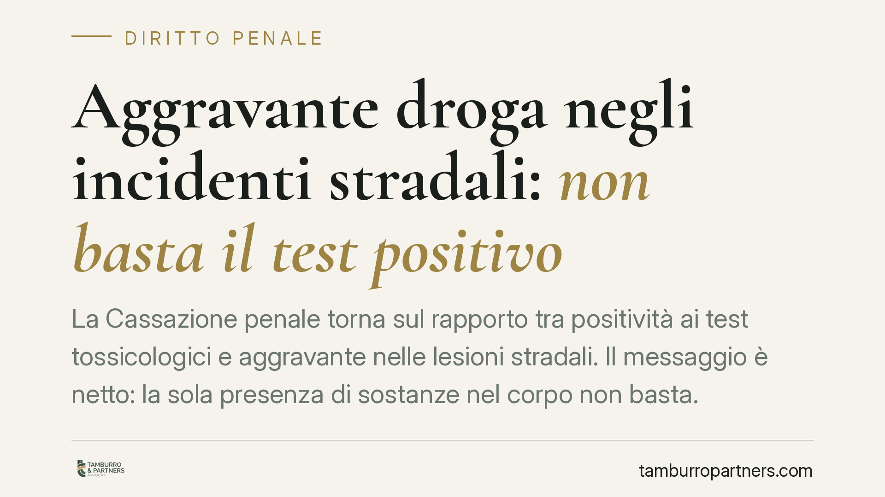

Aggravante droga negli incidenti stradali: non basta il test positivo
La Cassazione penale torna sul rapporto tra positività ai test tossicologici e aggravante nelle lesioni stradali. Il messaggio è netto: la sola presenza di sostanze nel corpo non basta. Occorre lo stato di alterazione psicofisica, accertato con indici sintomatici. Un principio che sposta il baricentro della difesa e impone attenzione alle garanzie procedurali sull'avviso al difensore.

Il caso e il principio
La vicenda riguarda un conducente imputato per lesioni stradali gravi, con contestazione dell'aggravante prevista per chi guida sotto l'effetto di sostanze stupefacenti. La difesa aveva eccepito che il solo esito positivo del prelievo non dimostrava che il conducente fosse concretamente alterato al momento del sinistro.
Secondo l'orientamento espresso dalla Corte, per configurare l'aggravante non è sufficiente la positività del test: serve la prova di uno stato di alterazione psicofisica rilevabile attraverso indici sintomatici (comportamento, eloquio, capacità di coordinamento, condizioni fisiche) accertati dagli agenti intervenuti.
> Nota sulla fonte. Gli estremi della pronuncia (numero, anno e Sezione) sono in corso di verifica: l'anno 2026 riportato dalla fonte secondaria rende la citazione da confermare sui repertori ufficiali. Trattiamo quindi il dato come orientamento, non come precedente puntualmente citabile.
Inquadramento normativo
L'art. 590 bis c.p. punisce le lesioni personali stradali e prevede un aggravamento per chi si pone alla guida in stato di alterazione da stupefacenti, secondo il richiamo all'art. 187 del Codice della strada. La differenza rispetto al [semplice illecito amministrativo o penale di guida sotto sostanze] sta proprio nel concetto di alterazione, distinto dalla mera assunzione.
È un punto che ricorda la logica delle soglie previste dall'art. 186 C.d.S. per l'alcol: lì il legislatore fissa valori quantitativi oggettivi (i tassi alcolemici), qui invece manca una soglia numerica per gli stupefacenti. Ne consegue che l'accusa non può fondarsi sul solo dato di laboratorio, ma deve dimostrare l'effettiva incidenza della sostanza sulla condotta di guida.
Questo profilo assume rilievo particolare per i cannabinoidi: i metaboliti restano tracciabili nell'organismo per giorni, talvolta settimane, ben oltre la durata dell'effetto psicoattivo. La positività può quindi riflettere un'assunzione risalente e non un'alterazione al momento del fatto. È un argomento difensivo di peso, da costruire con dati clinici e temporali.
Il profilo procedurale: l'avviso al difensore
Gli accertamenti tossicologici svolti nell'immediatezza rientrano tra gli atti garantiti. Quando la polizia giudiziaria procede ad accertamenti urgenti, l'art. 356 c.p.p. riconosce al difensore la facoltà di assistere; l'art. 114 disp. att. c.p.p. impone di avvisare l'indagato della facoltà di farsi assistere dal difensore di fiducia.
L'omissione di tale avviso genera una nullità a regime intermedio: essa deriva dal combinato disposto dell'art. 178 lett. c) c.p.p. (nullità di ordine generale relative all'assistenza dell'imputato) e dell'art. 180 c.p.p., che ne fissa il regime. La deducibilità e la sanatoria seguono i termini degli artt. 181 e 182 c.p.p.: la nullità va eccepita entro i termini di legge, altrimenti si intende sanata.
Implicazioni pratiche
Per il conducente imputato cambia il terreno di gioco. La difesa non deve limitarsi a contestare l'esito del prelievo, ma può lavorare su due fronti: la mancanza di indici di alterazione e le eventuali irregolarità procedurali nell'acquisizione della prova.
Attenzione però a un equivoco frequente: la caduta dell'aggravante non equivale all'assoluzione. Se viene meno l'alterazione da stupefacenti, resta l'eventuale responsabilità per il reato di lesioni stradali nella sua forma base, valutata sul rispetto delle regole di prudenza e sul nesso causale. Il risultato è una riqualificazione, non necessariamente un proscioglimento.
Cosa fare in concreto
- Recupera subito i verbali degli accertamenti: verifica se risulta l'avviso della facoltà di farsi assistere dal difensore.
- Ricostruisci la tempistica dell'assunzione rispetto al sinistro, con particolare attenzione alla tracciabilità prolungata dei cannabinoidi.
- Analizza gli atti di polizia per individuare indici sintomatici realmente descritti: annotazioni generiche o assenti indeboliscono l'aggravante.
- Valuta l'eccezione di nullità entro i termini degli artt. 181-182 c.p.p.: attendere può significare sanatoria.
- Consulta un consulente tossicologo per una perizia sull'effettiva incidenza della sostanza sulla capacità di guida.
Consigliamo di intervenire tempestivamente: molte scelte difensive utili si giocano nelle prime fasi e non sono recuperabili in seguito.
---
*Contributo informativo a cura di Tamburro & Partners Avvocati - Avv. Giuseppe Tamburro. Non costituisce parere legale.*
Ogni condominio ha una storia a sé.
Se gestisci un'amministrazione e vuoi un confronto su una specifica questione condominiale, scrivi allo studio. Ti rispondiamo entro un giorno lavorativo.